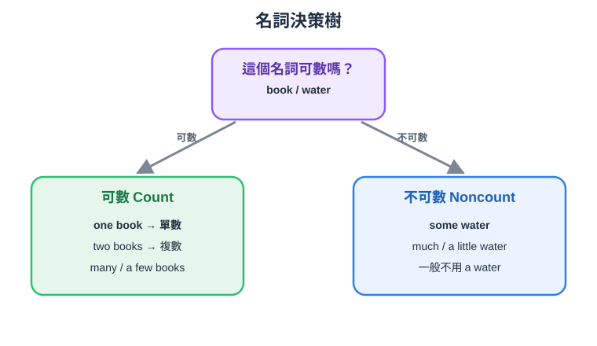

F0 句子零件島
📗 一個與多個名詞
Singular and Plural Nouns ·
← 回文法地圖
🏝️ 情境：先看看什麼時候會用到
A
🔊
How many books do you have?
B
🔊
I have three books.
A
🔊
How many boxes are on the table?
B
🔊
There is one box on the table.
🔊 整段對話
🎯 今天你要學會：說清楚是「一個」還是「很多個」
🎧 教學 Podcast（NotebookLM 生成）
🎬 影片
🎧 Podcast
STEP ①
核心例句
🔊
I have one book.
🔊
She has two books.
👀 看更多例句
🔊
There are three boxes.
🔊
The children are outside.
STEP ②
比一比：哪句對？
I have two book.
🔊
I have two books.
數量大於一時，可數名詞通常用複數。
👀 看更多對照
Three child are playing.
🔊
Three children are playing.
child 的複數是不規則形式 children。
🤔 為什麼？（規則＋常見錯誤）
📌 一個用原形；兩個以上字尾多半加 -s
one + singular noun; two or more + plural noun
🟠 句型少了零件
「五支鉛筆」
❌ five pencil
→
✅ five pencils
🔊
數字 five 後面要接複數可數名詞。
🟠 句型少了零件
「兩個盒子」
❌ two boxs
→
✅ two boxes
🔊
box 以 x 結尾，複數加 -es。
📊 看整張規則圖

STEP ③
小測驗
STEP ④
🎤 口說作業
🗣️ 說一句有數字、也有兩個以上東西的話
範例
🔊
I have three books.
我說完了
STEP ⑤
✍️ 手寫作業（紙本為主）
✍️ 用 box 和 child 的複數各寫一句
範例
🔊
There are two boxes. The children are playing.
紙上寫：① 照抄一次 → ② 遮住憑記憶寫一次 → ③ 自己換個內容寫一句。
我寫完了
← 上一課
📋 文法地圖
下一課 →